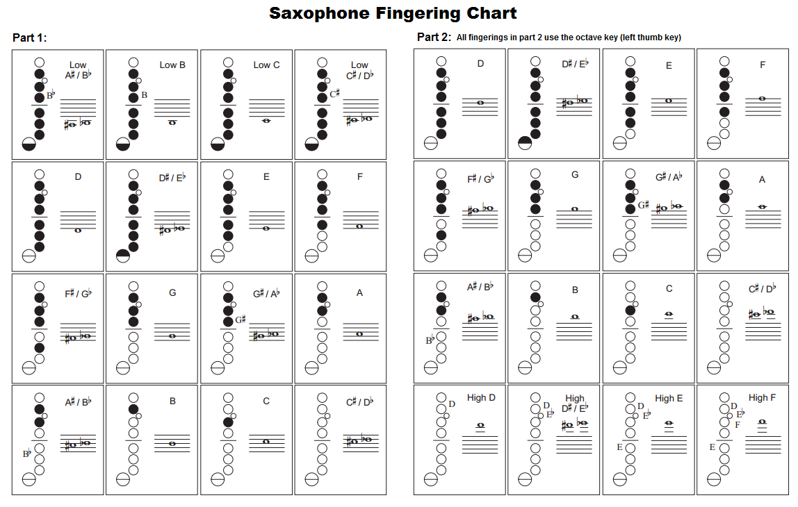

EazyTheory: Fingering Chart
The Alto Sax fingering chart is vital to understanding the proper buttons and valves that must be pressed to playing a certain note. The positions of each button and valve can only be memorized through touch and repetition.
Click me to return home!
